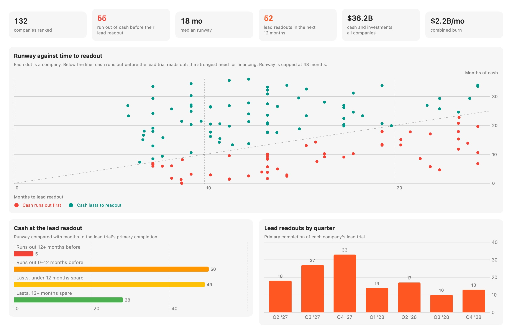
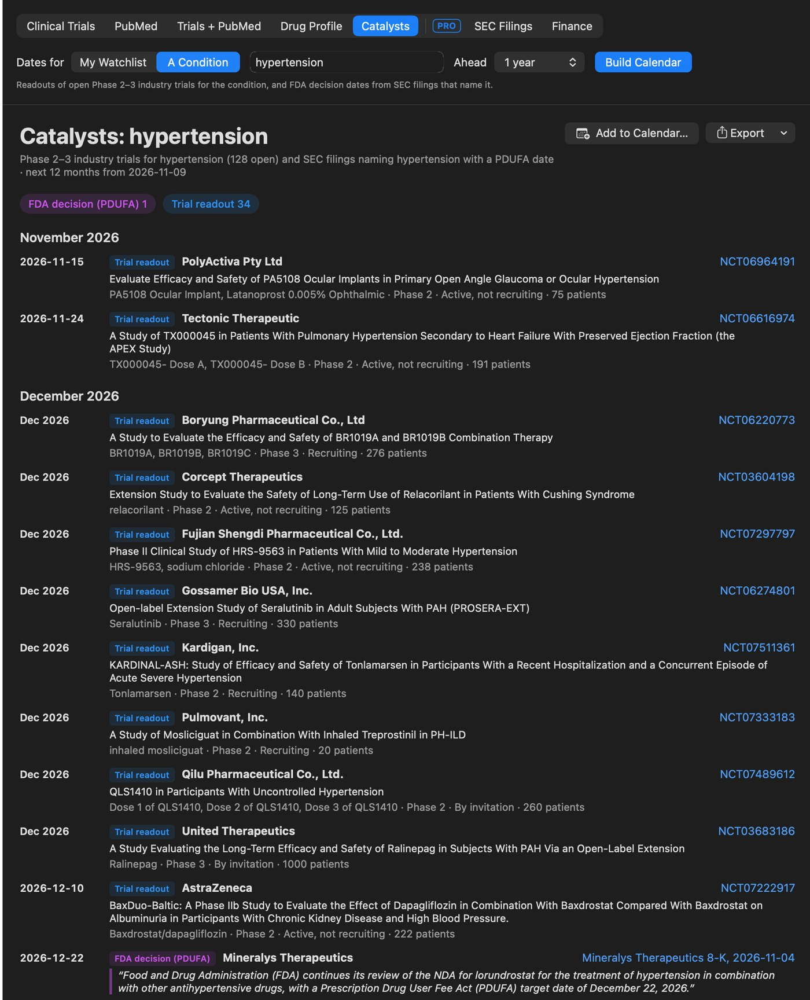
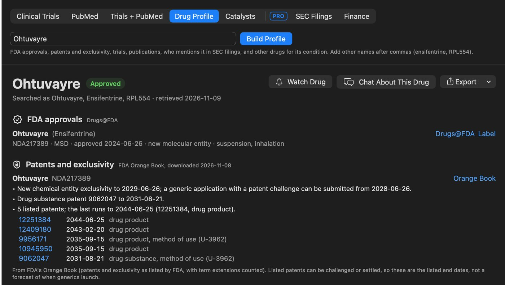

Find the biotech companies that need capital before their next readout.
TrialCarta Pro reads ClinicalTrials.gov, SEC EDGAR and PubMed together and ranks drug developers with a readout coming and cash that may not last until then, listed and private. Royalty, credit and business development teams see the next deals before they come to market.

Financing Screen analytics from a live run on public data, company names left out.
What it does
Financing Screen
A ranked list of drug developers with a phase 2 or 3 readout in the window you choose: readout timing, cash, runway, and whether the cash lasts to the readout. Analytics, CSV and a PDF brochure to share.
Private companies too
Sponsors that aren't listed don't publish financial statements. TrialCarta shows what SEC filings say about how they're funded and when they last raised.
New companies, on your radar
Sponsors whose first trials were just posted, how they're funded and what's published on the drug. Keep the ones you like on your radar and hear when they move.
Alerts every week
Watched screens, companies and drugs are re-checked weekly: new raises, readouts that moved, trials stopped or completed, enrollment or endpoints changed, results posted, going-concern wording and royalty deals signed.
Deal terms from filings
Search EDGAR for licensing, royalty and financing agreements and see the upfront, milestone and royalty terms quoted from the filing itself.
A brief on any company
Ask for a financing brief: the lead asset's evidence, the readout ahead, runway and obligations. Every figure cites its filing or trial record, and citations are checked before you see them.
The dates that move a deal
FDA decisions, readouts and the end of exclusivity, from the filings and registries that state them, each one linked to its source.
Catalyst calendar
Build a calendar for a condition or for everything you watch: trial readouts from ClinicalTrials.gov, FDA decision (PDUFA) dates the companies stated in their SEC filings, and the dates from FDA's Orange Book when exclusivity and patents end. Grouped by month, six months to five years ahead.
- Each FDA date quotes the sentence it came from and links to the filing.
- Add the dates to Outlook, Google or Apple Calendar, or export a PDF or Markdown.
- Dates are found by rules, not an AI model, so the same filings give the same dates.

A live run on public data. Click to enlarge.
Patents and exclusivity in every drug profile
A drug's profile brings its FDA approvals, trials, publications and mentions in SEC filings onto one page, with the listed patents and exclusivity from FDA's Orange Book: when new chemical entity exclusivity ends, when a generic company can first file a patent challenge, and when the last listed patent runs out.
- Watch a drug to hear when its trials change, and to put its dates on your calendar.
- For biologics, an estimate of the 12-year exclusivity from approval, with a link to FDA's Purple Book.

A Drug Profile from a live run on public data.
Is your memo still right?
Check a diligence memo, forecast or investment thesis against what the registry and SEC filings say today. TrialCarta finds the statements that depend on public facts (a trial's readout date, enrollment, primary endpoint or status, and FDA decision dates) and marks each one Changed, Holds or Can't check, with the source.
- Verdicts are decided by rules, not an AI model. Your document isn't changed.
- The AI then drafts new wording for what changed, with every quote checked against your document.
- Keep the memo on your radar to hear when a claim stops holding.
- Only trial IDs and drug names are searched for. The memo stays on your machine.
How to check a memo's trial dates, by hand or with TrialCarta
| Verdict | Your memo says | Now |
|---|---|---|
| Changed | “Topline data are expected in mid-2026.” (NCT06842823) | Primary completion registered for Dec 2026 |
| Changed | “…donidalorsen (NCT05392114), which is currently enrolling.” | Active, not recruiting |
| Changed | “PDUFA target action date of February 28, 2027” (lonvo-z) | March 10, 2027, quoted from Intellia's 8-K of Nov 5, 2026 |
| Holds | “…enroll approximately 150 patients.” (NCT06842823) | 157 participants (actual) |
From a test memo checked against public data on November 10, 2026.
Why you can rely on it
- Public sources, read fresh. ClinicalTrials.gov, SEC EDGAR (filings, reported financials and private-placement notices), PubMed and FDA's Orange Book, retrieved each time you run it. Every number links back to where it came from.
- Tested on history. Run as of mid-2021 and early 2023, the ranking put two to three times more of the companies that went on to sell a royalty in its top ten than a random pick would.
- Rules for the numbers, AI for the reading. Cash, runway and rankings come from fixed rules you can check. The AI model writes briefs from the records, and every citation is verified against them.
- Your deal work stays with you. TrialCarta runs on your Mac, AI model included. Only the public searches go out; your documents, questions and notes never leave the computer.
Bring your own data
The screen, calendar and briefs run on public sources. Your deal work can sit right next to them: point TrialCarta at a folder and it reads your documents on your Mac. For teams, we offer a fixed-scope setup that connects your internal sources (shared drives, models and memos, competitive-intelligence notes, and licensed databases you already subscribe to, where your license allows) and builds watchlists for your pipeline and portfolio. It's set up on your machines, and your data stays there.
Ask about a setupBuilt for
Royalty and structured finance
Source companies with strong evidence and a funding need ahead of the readout.
Venture debt and credit
See runway against milestones, and hear when a borrower raises or a trial slips.
Biotech investors
Track readouts, financings and new private companies across a whole indication.
Pharma BD and licensing
Spot partners that may want a deal before their data, and read the terms of comparable deals.
How it's licensed
TrialCarta Pro is an add-on to a TrialCarta license, for one person or a team, priced per person per year. Enterprise licenses include it. TrialCarta runs on a Mac, and a trial copy includes everything in Pro so you can try it on your own questions.
Figures come from public data and are approximate. TrialCarta is a screening and research aid, not investment advice: check figures against the filings before relying on them.
Common questions
Where does the data come from?
Public sources only: ClinicalTrials.gov, SEC EDGAR (filings, reported financials and private-placement notices), PubMed, and FDA's Drugs@FDA and Orange Book, read fresh each time you run it.
Do our deal documents leave our office?
No. TrialCarta runs on your Mac, including the AI model. Only the public searches go out; your documents, questions and notes stay on the computer.
Can TrialCarta use our internal data?
Yes. Point it at a folder and it reads your documents on your Mac, next to the public sources. For larger setups, we connect your internal sources and the licensed databases you already subscribe to during onboarding, on your machines. Nothing is uploaded to us.
Where do the FDA decision dates come from?
From the companies' own SEC filings: TrialCarta finds the PDUFA date a filing states, quotes the sentence and links to the filing. Companies that don't file with the SEC, or don't state a date, aren't covered, and FDA can act before or after the date.
Does it cover companies outside the US?
Their trials, yes. Financial figures come from SEC filings, so cash and runway cover companies listed in the US, and private funding covers US private raises.
Can we try it?
Yes. Ask for a demo on this week's data, or for a sample brochure, and we'll send a trial copy.
See it on this week's data
We'll run the Financing Screen live, build a catalyst calendar, walk through a company brief, and show the alerts and radar.
Ask for a demo